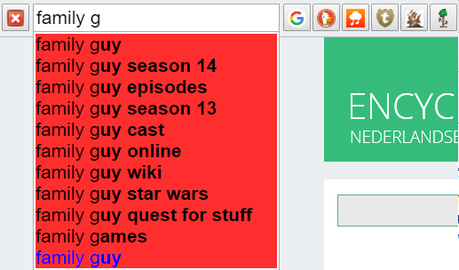
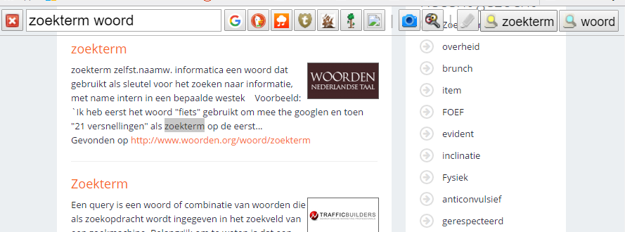

| press from a web page to open SearchBar |
| selected text appears automatically |
type for search suggestions press a button or hotkey to search hold Ctrl to open in a new tab |  |
|  | highlight search terms |
| right-click on an input field to add a custom search |  |  |
 | customize everything here |
| If you experience any problems, first try refreshing the page. Next try disabling and re-enabling SearchBar from Chrome's Extensions page. Then go to "Help/FAQ" to view the FAQ or submit a support request. |
Support requests
If you are experiencing a problem with SearchBar, have an idea for a new feature you'd like included, or have any question at all, then I would love to hear from you.
Simply submit a bug report, feature suggestion or question. I will try to get back to you quickly – please check back for my response.
Frequently asked questions
How do I add a particular search engine?
The easiest way to do this is to right-click on the search engine's input field and select "Add to SearchBar...". Alternatively, you can add custom searches manually via the advanced options under "Custom searches".
How do I open search results in a new tab?
Simply click the search button using the middle mouse button or holding the Ctrl key (just like for an ordinary link). To be able to open search results in a new tab by left-clicking, check the "Open search results in a new tab by default" checkbox.
You can also hold Ctrl while you are pressing a hotkey. Alternatively, you can specify your own new tab hotkeys via the advanced options under "Custom searches".
For your primary (leftmost) search (highlighted at the top of your custom searches), you can also press Ctrl+Enter.
How do I perform two different searches at once?
You can do this by setting a hotkey for one custom search to be the same as a new tab hotkey for another custom search. This can be done via the advanced options under "Custom searches".
How can I highlight an exact phrase made up of more than one word?
Simply put the phrase inside quotation marks.
How can I backup or transfer my settings to another computer?
You can do this using the "Import/export settings" feature under "Advanced settings". Simply copy the text from the box and save it in a convenient location. To restore your settings, paste the text into the box and click "Save changes".
This feature may not work if your settings exceed 65535 characters. The most common cause of this is large image uploads.
How do I get the hotkey for showing SearchBar to work on the New Tab page?
SearchBar's hotkeys do not function on the New Tab page. However, you can set another hotkey by selecting "Keyboard shortcuts" from the bottom of Chrome's Extensions page.
Why does SearchBar sometimes appear in a popup when I press the toolbar button?
The full version of SearchBar uses content scripts and so cannot run on the New Tab page or on Chrome settings pages (such as this page). The "popup" version allows you to access the main features of SearchBar from these pages by using the toolbar button. However, certain features are disabled for technical reasons.
There is an option to always show SearchBar in a popup when the toolbar button is pressed, available under "Advanced settings". Occasionally the popup will appear even if you don't have this option selected and are on an ordinary web page. The most common reason for this is that the page has not yet finished loading.
Why does a small empty tooltip sometimes appear when I press the toolbar button?
The most common reason for this is that SearchBar is still loading. Loading times can be a little longer when you first open SearchBar. Please be patient.
Why do I get a yellow triangle ("page includes other resources that are not secure") over the padlock symbol in the address bar when using SearchBar?
This may be caused by SearchBar displaying the icons for your custom searches if they are not transferred over a secure connection. To avoid this, use icon URIs beginning with "https:" rather than "http:". These can be changed via the advanced options under "Custom searches".
There is an option to use the images.weserv.nl image proxy, available under "Advanced settings". If this option is enabled and you are viewing a webpage over https, then SearchBar will attempt to use this proxy to display over https any icons with URIs beginning with "http:". Unfortunately this will not always be successful as not all image formats are supported. However, it is recommended to keep this option enabled to help with this issue.
Why does SearchBar need to "access my data on all websites"?
Chrome requires this permission to be asked for in order for SearchBar to be inserted onto every page. However, SearchBar does not change or use any of your data outside of its declared features.
SearchBar has a search suggestions feature, which submits searches to Google in order to receive the suggestions, a search history feature, which stores your previous searches, and an option to use the images.weserv.nl image proxy for custom search icons. However, all of these features can be disabled from this page at any time. Note that you can also edit your search history from "Advanced settings", and that the search history feature is always disabled in incognito mode. Other than this, SearchBar will only send your search queries to the search engines you request.
If you are in danger of accidentally submitting sensitive data, then please temporarily disable SearchBar from Chrome's Extensions page.
How can I reset to the default settings?
You can do this using the "Import/export settings" feature under "Advanced settings" by deleting everything and clicking "Save changes".
What inspired you to create such an amazing extension?
This extension was borne out of personal frustration with Chrome's default search system and dissatisfaction with the features of similar extensions. I hope it improves your browsing experience as much as it has mine, and I would love to hear your feedback.

Hi, I'm Maarten, the author.
Spread the word |
Rate and review You can rate and review SearchBar here. |
Sponsor SearchBar
I'd be incredibly grateful if you would sponsor me by donating to Against Malaria Foundation via the following link.
http://www.againstmalaria.com/SearchBar
I have chosen to support Against Malaria Foundation because they are considered to be an extremely cost-effective charity by charity evaluators Giving What We Can and GiveWell.